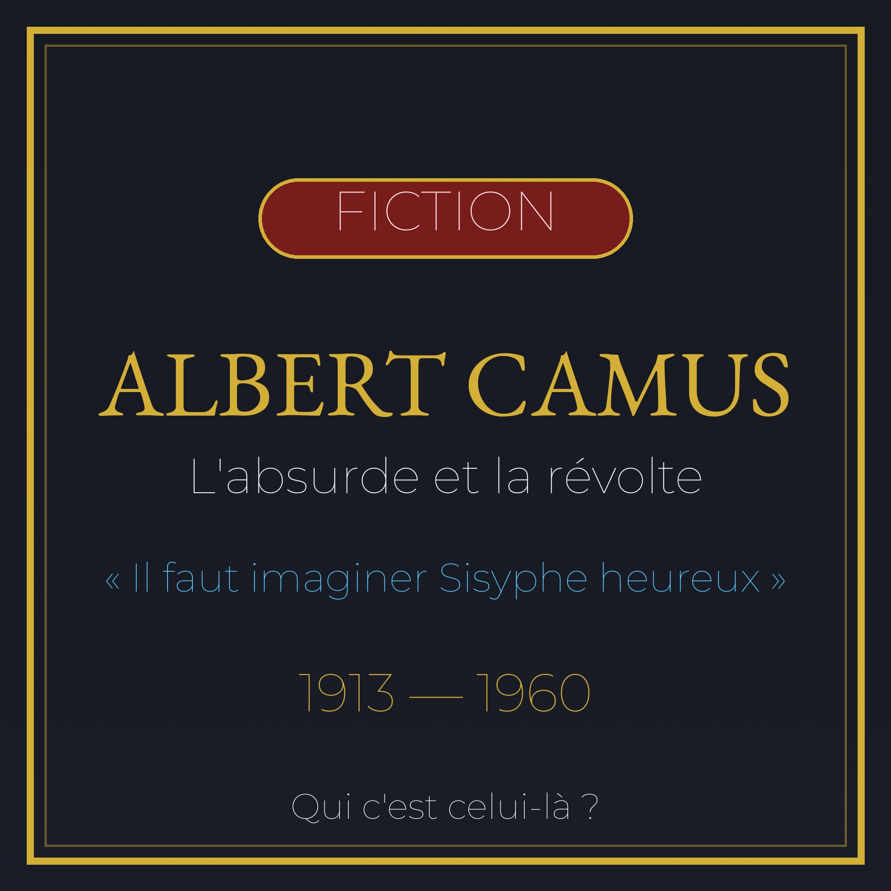

Portrait n°15 — « Il faut imaginer Sisyphe heureux »
Œuvre de fiction radiophonique et biographique à caractère historique et patrimonial. Les faits présentés dans cet article sont réels et sourcés ; l'entretien est une reconstitution imaginée.

🎧 Écoutez le portrait : Albert Camus face à l'absurde et la révolte, 10 min 12 — Écouter sur Spotify →
Albert Camus naît le 7 novembre 1913 à Mondovi, en Algérie française, et meurt le 4 janvier 1960 dans un accident de voiture à Villeblevin. Fils d'un père ouvrier agricole mort à la Marne en 1914 et d'une mère à demi illettrée faisant des ménages, il grandit dans le quartier pauvre de Belcourt à Alger. À l'école, un instituteur, Louis Germain, repère son intelligence et le pousse vers le lycée — Camus lui dédiera son discours de Nobel.
En 1942, à 29 ans, Camus publie coup sur coup « L'Étranger » et « Le Mythe de Sisyphe ». La thèse : le monde n'a pas de sens, et pourtant il faut vivre. Meursault, le héros de L'Étranger, tue sans raison et refuse de mentir sur ses sentiments — il sera condamné moins pour son crime que pour son indifférence. Sisyphe, lui, pousse éternellement son rocher, et Camus conclut : « Il faut imaginer Sisyphe heureux. » L'absurde n'est pas une fin, c'est un point de départ.
En 1947, « La Peste » paraît : une chronique de la ville d'Oran frappée par une épidémie. Allégorie de l'Occupation nazie, le roman montre des hommes ordinaires — le docteur Rieux, le journaliste Rambert, l'employé Grand — qui résistent sans héroïsme, parce que c'est cela, être humain. « Ce qui est naturel, c'est le microbe. Le reste, la santé, l'intégrité, la pureté, c'est un effet de la volonté. »
En 1951, « L'Homme révolté » marque sa rupture avec Jean-Paul Sartre. Camus y refuse la violence révolutionnaire justifiée par l'Histoire — le meurtre politique ne peut jamais servir la justice. La polémique est violente, Sartre l'accuse de trahir le camp progressiste. Camus répond par le silence, puis par « La Chute » (1956), son roman le plus sombre.
En 1957, à 44 ans, Camus reçoit le prix Nobel de littérature. Dans son discours, il rend hommage à Louis Germain. Déchiré par la guerre d'Algérie, il appelle à une trêve civile, refusant de choisir entre sa communauté pied-noir et la justice pour les Algériens — position incomprise des deux côtés. Le 4 janvier 1960, la Facel Vega de son éditeur Michel Gallimard heurte un platane : Camus meurt sur le coup. Dans sa sacoche, on retrouve le manuscrit inachevé du « Premier Homme ».
Camus n'a jamais accepté l'étiquette d'existentialiste. Sa philosophie tient en trois mots : l'absurde, la révolte, la mesure. Ni Dieu, ni Histoire, ni idéologie ne justifient qu'on tue. Face au silence du monde, il n'y a qu'une réponse : rester debout, regarder la mer, et recommencer.
« Au milieu de l'hiver, j'apprenais enfin qu'il y avait en moi un été invincible. » — Retour à Tipasa, 1954
Sources : Wikipedia, Stanford Encyclopedia of Philosophy, BNF. Recoupées octobre 2026.